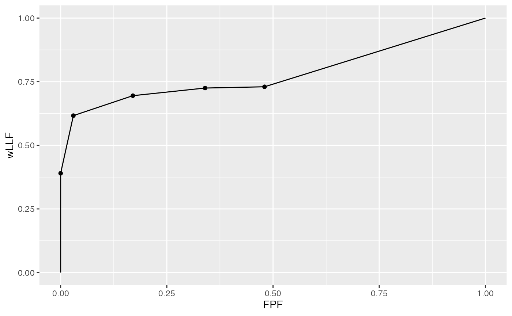
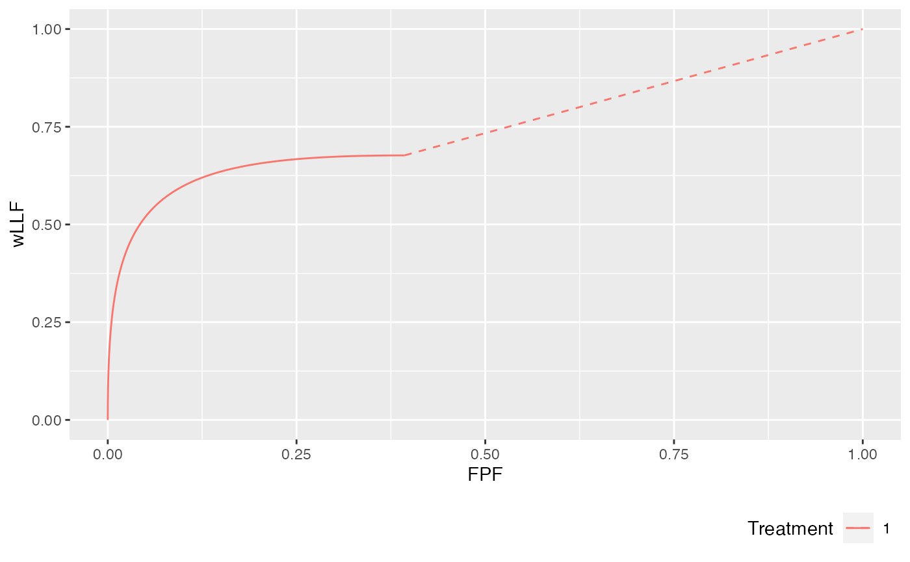
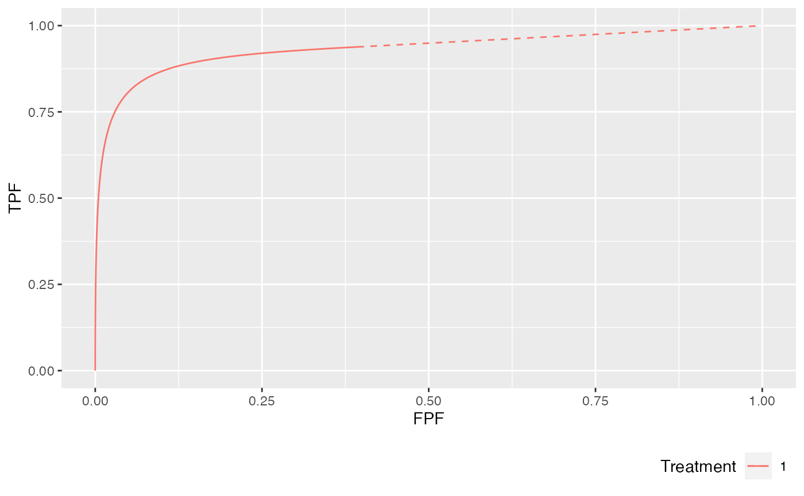

Ch17Vig1PlotRsmOpCh.Rmddataset members (lesionID, lesionWeight) and (lesDist, lesWghtDistr), which are RSM model parameters.lesDist.lesWghtDistr.
str(dataset04$lesions$IDs)
#> num [1:100, 1:3] 1 1 1 1 1 1 1 1 1 1 ...
str(dataset04$lesions$weights)
#> num [1:100, 1:3] 1 1 1 1 1 1 1 1 1 1 ...
p <- PlotEmpiricalOperatingCharacteristics(dataset04, opChType = "wAFROC")
p$Plot
## Following example is for mu = 2, lambda = 1, nu = 0.6. 20% of the diseased
## cases have a single lesion, 40% have two lesions, 10% have 3 lesions,
## and 30% have 4 lesions.
lesDistr <- c(0.2, 0.4, 0.1, 0.3)
## On cases with one lesion the weights are 1, on cases with 2 lesions the weights
## are 0.4 and 0.6, on cases with three lesions the weights are 0.2, 0.3 and 0.5, and
## on cases with 4 lesions the weights are 0.3, 0.4, 0.2 and 0.1:
relWeights <- c(0.3, 0.4, 0.2, 0.1)
p <- PlotRsmOperatingCharacteristics(
mu = 2,
lambda = 1,
nu = 0.6,
OpChType = "wAFROC",
lesDistr = lesDistr,
relWeights = relWeights,
legendPosition = "bottom", nlfRange = c(0, 1), llfRange = c(0, 1))
p$wAFROCPlot
lesDistr
#> [1] 0.2 0.4 0.1 0.3
relWeights
#> [1] 0.3 0.4 0.2 0.1lesDistr array 0.2, 0.4, 0.1, 0.3 specifies the fraction of diseased cases with the number of lesions corresponding to the column index. To specify a dataset with exactly 3 lesions per diseased case use lesDist = c(0, 0, 1, 0).relWeights array 0.3, 0.4, 0.2, 0.1 specifies the relative weights.OpChType one can generate other operating characteristics.wAFROC and wAFROC1 curves.
lesDistr <- c(0.2, 0.4, 0.1, 0.3)
p <- PlotRsmOperatingCharacteristics(
mu = 2,
lambda = 1,
nu = 0.6,
OpChType = "ROC",
lesDistr = lesDistr,
legendPosition = "bottom")
p$ROCPlot